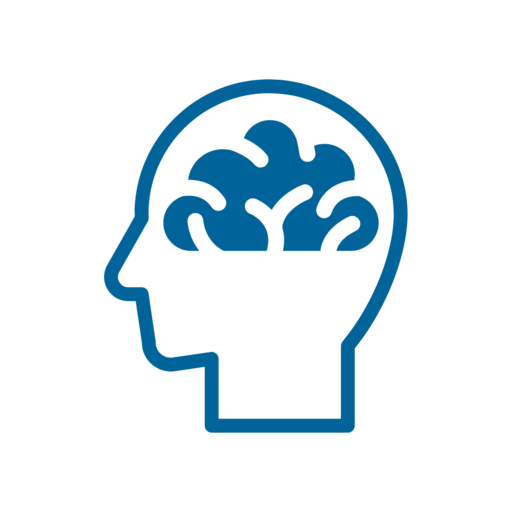

How to play
Every turn, a square flashes on the grid and a letter is spoken. Your goal is to spot matches between the current turn and the one from exactly N turns ago.
Position
Match if the square is in the exact same spot as N turns ago.
Audio
Match if the spoken letter is exactly the same as N turns ago.
Both, one, or neither can match on any given step. In 2-Back, compare the current step to 2 steps ago. In 3-Back, compare it to 3 steps ago.
About the task
Dual N-Back is a cognitive training exercise intended to improve working memory. By tracking visual and audio cues simultaneously, you force your brain to actively update its short-term memory buffer and filter out older information.
FAQ
Does this save my data?
No. The game runs entirely in your browser. No data leaves your device.